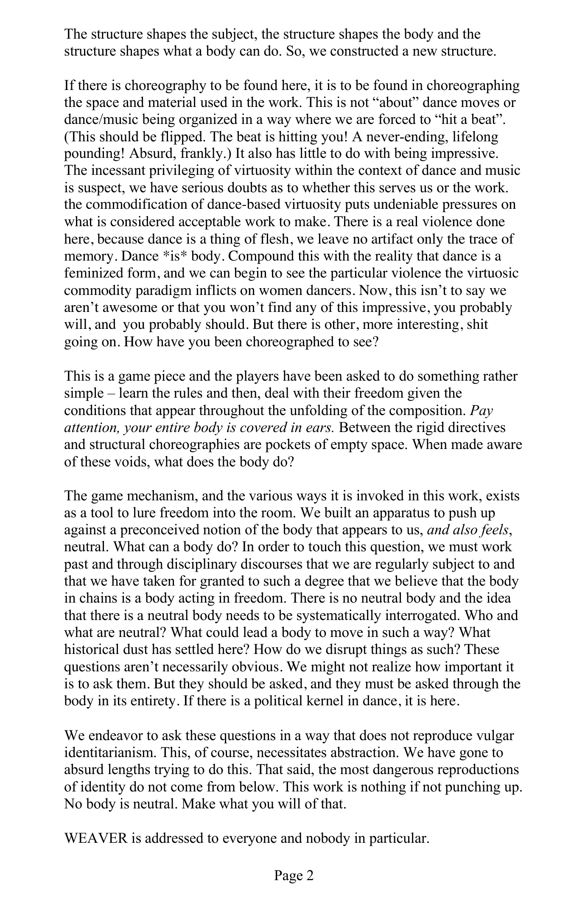
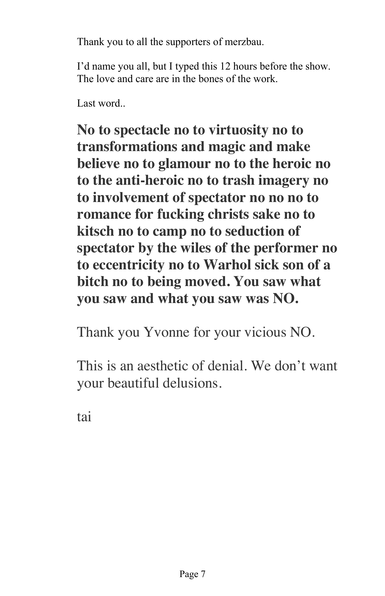
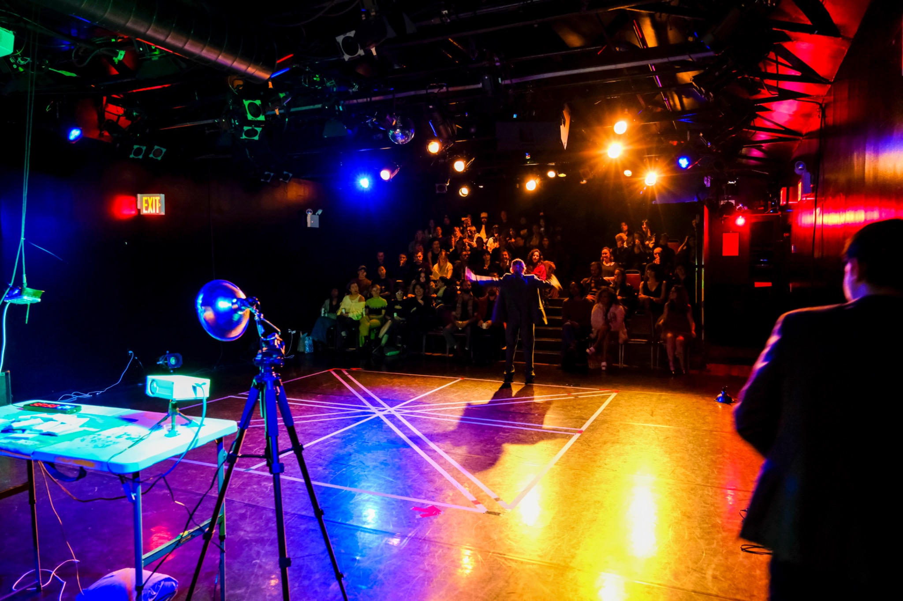
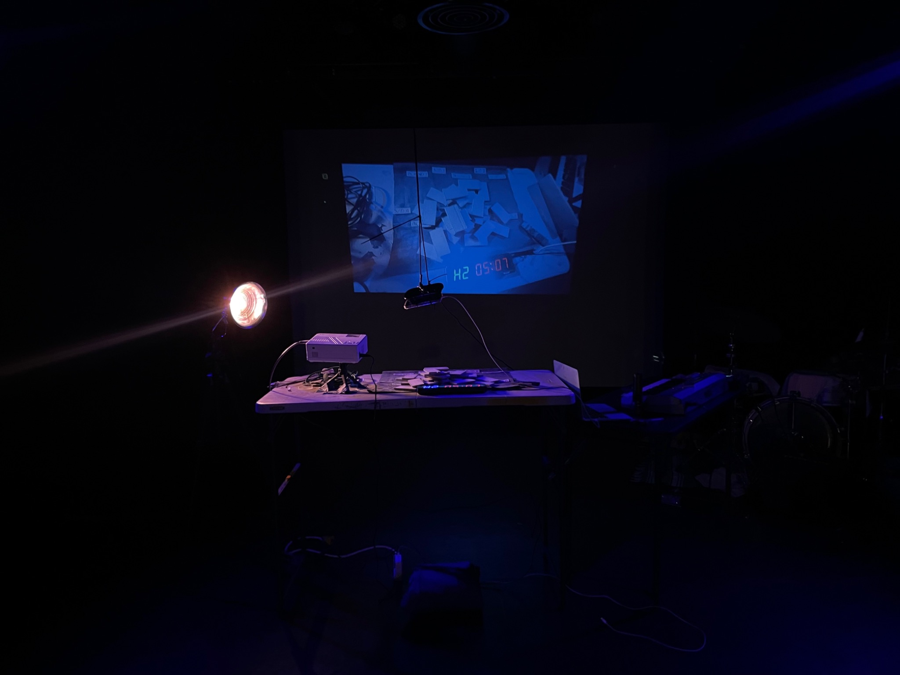
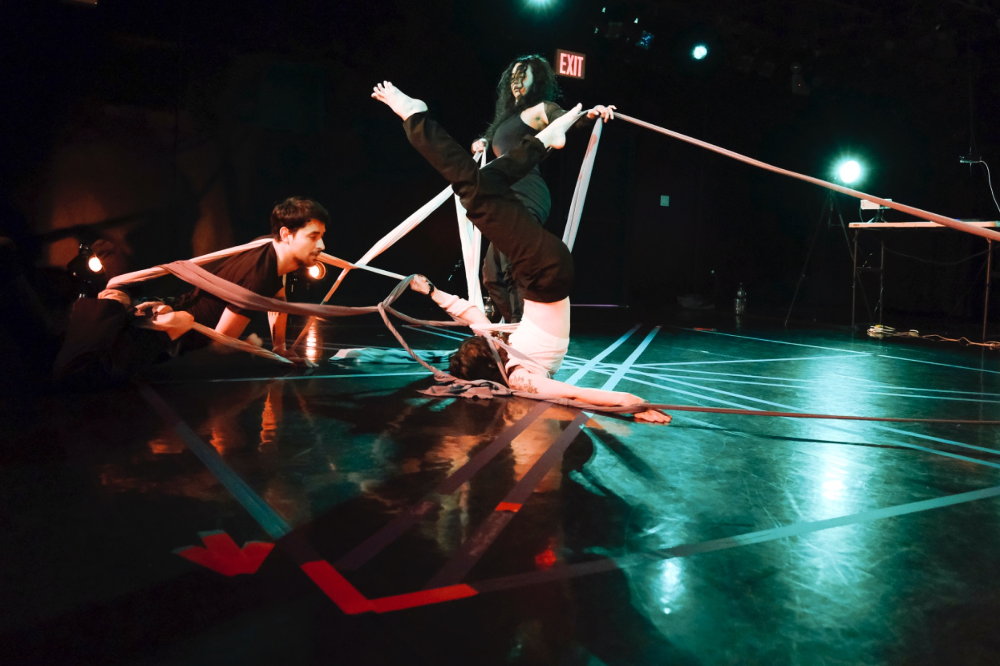

WEAVER
03.2023“The structure shapes the subject, the structure shapes the body and the structure shapes what a body can do. So, we constructed a new structure.”



GAME PIECE EXPERIMENT 2: WEAVER
WEAVER is a six-player performance in which the score is constructed through a game of chance. Thirty tiles begin face down; each player draws five without knowing what they will receive. Taking turns, the players place tiles face up on the game board or discard them, assembling six rounds of music and movement punctuated by interludes. An overhead camera projects the board as it is made, allowing the audience to watch the composition being constructed.
Each round requires a music tile and a movement tile. Movement tiles activate choreographic situations including QUADRANT, OKLAHOMA, LAMPS, and WEAVER itself. Music tiles call up blocks developed from preprogrammed rhythms on a Yamaha drum machine. Directive tiles work differently: they are filters that color an entire round, changing how its music and movement are approached. Instructions such as “25% EFFORT,” “EXPANSIVE,” “SPEED,” and “DISJOINTED” remain open to the players’ interpretation, provided the other rules stay intact.
Once the board is set, the shuffler can make exactly two changes. Then the clock starts, and the performers must negotiate the conditions they have collectively constructed. The score establishes a sequence without fixing its outcome; chance, decisions, and improvisation determine what the performance becomes.
ABBREVIATED WEAVER
NIGHT 2
ABBREVIATED WEAVER is a 44:29 recording of night 2 of the March 2023 performance at Triskelion Arts Center. It opens with the tile game, showing the score being constructed before its realization in movement and music. The index below follows the recorded sequence, with entries for all six rounds, two duos, two solos, and the closing bows.
The recording is incomplete. Round Three (LAMPS) is interrupted by a file error, and Round Five (also LAMPS) was not captured. These gaps remain visible in the index rather than presenting the recording as a complete account of the performance.
NAVIGATE THE SCORE
SELECT A TIMECODE TO PLAY FROM THAT MOMENT
- 0100:00INTRO / TILE GAMETO 07:04
- 0207:05ROUND 1 / OKLAHOMATO 13:08
- 0313:09SOLO 1 / BASSTO 15:12
- 0415:13ROUND 2 / QUADRANTTO 21:15
- 0521:16DUO 1 / BIANCA + DRUMSTO 23:21
- 0623:22ROUND 3 / LAMPSTO 24:56INCOMPLETE / FILE ERROR
- 0724:57ROUND 4 / QUADRANTTO 33:11
- 0833:12ROUND 5 / LAMPSTO 33:29NOT CAPTURED ON VIDEO
- 0933:30DUO 2 / CAS + TAITO 35:30
- 1035:31ROUND 6 / WEAVERTO 41:35
- 1141:36FINAL SOLO / CAMTO 43:40
- 1243:41BOWSTO 44:29
ARCHIVE NOTE / ROUND 3: LAMPS IS INCOMPLETE DUE TO A FILE ERROR. ROUND 5: LAMPS WAS NOT CAPTURED IN THE VIDEO; 33:12–33:29 MARKS ITS POSITION IN THIS EDIT.
GAME APPARATUS
Thirty tiles. Six players. One composition assembled through chance.

THE BOARD / BROADCAST
DOCUMENTATION
PERFORMANCE PHOTOGRAPHS / MARCH 2023

WEAVER / PERFORMANCE / PHOTOS: KEVIN CONDON